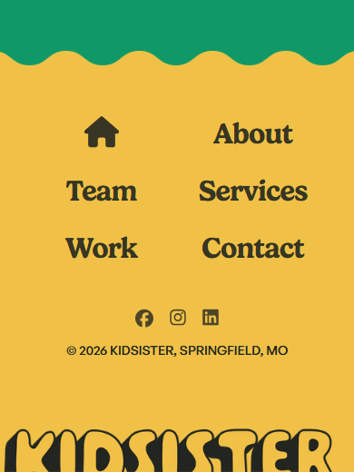
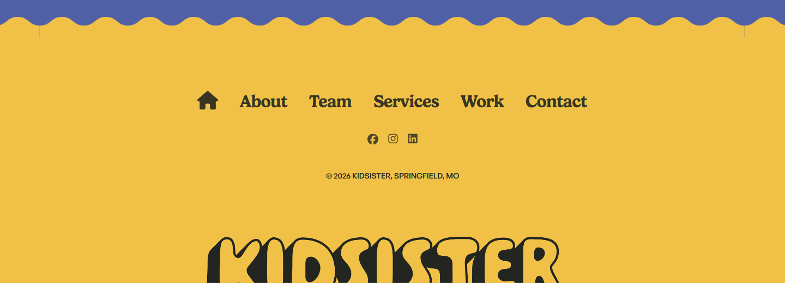

A working copy of the site with round 1 applied. Nothing on kidsister.co has changed yet. Click around the way a visitor would; every page is real.
Round 1 is the wording work that needed nothing from your side: saying where you are, naming the services in your own words on About and Services, and the small block of code that tells Google who Kidsister is. The design pieces (credits, the case study filters, the Big Blanket photos, the service pages) come in round 2 after our call.
| Where | Before | After |
|---|---|---|
| Footer, every page | © 2026 Kidsister | © 2026 Kidsister, Springfield, MO |
| Services, last paragraph | Kidsister specializes in the services above, but that doesn’t mean the ball stops there. | Based in Springfield, Missouri, Kidsister specializes in the services above, but that doesn’t mean the ball stops there. |
| Services, team paragraph | We’re a lean, scrappy little team that churns out high-quality, high-performing content like it’s our job. | We’re a lean, scrappy little team of photographers, designers, copywriters, and brand strategists that churns out high-quality, high-performing content like it’s our job. |
| Contact, intro line | We wanna hear all about what you’ve got goin’ on to see where we can jump in. 👇 | We’re in Springfield, MO and we wanna hear all about what you’ve got goin’ on to see where we can jump in. 👇 |
| About, first paragraph | Kidsister is a woman-owned studio agency located in Springfield, MO that specializes in asset creation for small businesses. | Kidsister is a woman-owned studio agency located in Springfield, MO that specializes in asset creation for small businesses: commercial photography, brand strategy, copywriting, and design. |
The rest of each paragraph is untouched, and nothing on the case study pages changed.
On phones, the contact form had grown a little taller than the frame holding it, so the Submit button and the captcha sat just below the edge with no way to scroll to them. On the working copy the frame now grows with the form, so the whole thing is reachable on any phone. Nothing about the form itself changed. It rides along with this round, so your OK covers it too.


The working copy can’t show these, so they are written out here instead.
| Where | Before | After |
|---|---|---|
| Homepage title (the browser tab and the Google result) | Kidsister | Woman-Owned, Creative-Led Marketing Content | Kidsister | Woman-Owned Marketing Studio in Springfield, MO |
And the code block for Google. It is invisible on the page; it tells search engines, in their own format, exactly this:
No phone number or street address is included, since the site doesn’t publish one. If you ever want either public, it is a one-line addition.
Reply with an OK, or with anything you’d like worded differently. Once you say go, I publish these in one step and check the live pages the same day. Anything you change your mind on later is a quick edit, not a project.